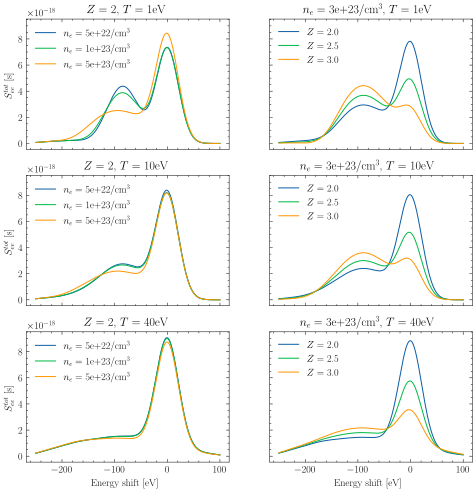
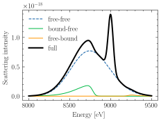

jaxrts.models.ScatteringModel
- class jaxrts.models.ScatteringModel(sample_points: int | None = None)[source]
A subset of
Model’s, used to provide some extra functionalities to (mainly elastic) scattering models. These models have a pre-definedevaluate()method, which is performing a convolution with the instrument function, and now requires a user to defineevaluate_raw()which is returning the dynamic structure factor without the instrument function or any frequency redistribution correction.Note
As these extra functionalities are only relevant when re-sampling and convolution with an instrument function is reasonable, the
Models used to describe ionic scattering are not instances ofScatteringModelas the convolution with a delta function would just result in numerical issues. For ionic scattering, useIonFeatModel, instead.A ScatteringModel allows users to set the
sample_pointsattribute, which defaults toNone. If set, the model is evaluated only on sample_points, equidistant points, rather than at all \(k\) that are probed. Afterwards, the result is interpolated to match theSetup’s \(k\).Methods
__init__([sample_points])check(plasma_state)Test if the model is applicable to the PlasmaState.
citation([style, comment])Return bibliographic information for the Model used.
evaluate(plasma_state, setup, *args, **kwargs)If
sample_pointsis notNone, generate a low-resulution :py:class`~.setup.Setup`.evaluate_raw(plasma_state, setup)Returning the dynamic structure factor (no convolution with the source-instrument function, and no frequency redistribution correction).
prepare(plasma_state, key)Modify the plasma_state in place.
sample_grid(setup)Define the sample-grid if
sample_pointsis notNone.Attributes
A list of keywords where this model is adequate for
A list of bibtex keys.
The number of points for re-sampeling the model.
Examples using
jaxrts.models.ScatteringModel
Calculate the full structure factors for various plasma conditions
Calculate the full structure factors for various plasma conditions
Showcase the DetailedBalace free-bound scattering Model
Showcase the DetailedBalace free-bound scattering Model
Showcase of the relavance of including free-bound scattering
Showcase of the relavance of including free-bound scattering
Number of interpolation in the Born Mermin Chapman Interpolation
Number of interpolation in the Born Mermin Chapman Interpolation